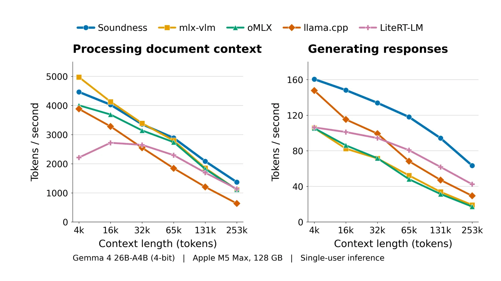

AI needs to be inexpensive enough for everyday use, secure enough to trust, and local and distributed enough to provide a backbone for resilience against data-center and cloud outages.
In the past year, AI has undergone an interesting transition. It has become useful enough for workflows and users to rely on it. But as AI spending has grown, we've started to limit which users can access AI and how much they can use it, while still treating its uptime as optional.
And yet this is an anomaly. We don't limit how many documents employees can edit in Word, how many calculations they can execute in Excel, how many emails they can send, or how many websites they can visit, within reason, on company computers. Nor do we treat the ability to do those day-to-day tasks as optional.
Yesterday's Frontier AI, Today's Laptop

With most of the focus on the frontier models, a no less significant revolution has been getting much less coverage. That is that local AI running directly on low-powered hardware is getting good enough to support real work.
Consider Google's Gemma 4 26B-A4B. Its published intelligence benchmarks put it roughly at the level of GPT-4.5 and o3-mini High. Not across the board, but with web search from You.com, enterprise context from Microsoft Work IQ, and a good harness, it may be more useful in many practical workflows.
But unlike those frontier models, Gemma 4 can run on a local laptop.
And it isn't a slouch either. To give you an idea of speed, based on measured inference rates, using the Soundness technology stack on an M5 Max laptop, processing a dense, 300-page business document and generating a two-page summary would take less than 80 seconds. Combined with an optimal caching strategy, such as with Agent Memory, returning to the same document even days later would take less than 20 seconds. And application-specific optimizations can drive performance much further.
Why This Matters for Enterprises
I expect much of the inference that runs in the cloud today to move onto employee computers and other local computing infrastructure.
Companies will gain a local computing backbone for resilience to cloud and data-center outages, less dependence on centralized services, greater security and privacy, and more predictable budgets.
It will give employees freedom to experiment, automate repetitive tasks, and create scripts, the equivalent of Word and Excel macros, without requiring large IT projects or multi-day workshops to enable that capability.
And this will reduce the need for financial controls around every interaction. We don't track every spreadsheet calculation. Why should we budget for every AI inference call?
A Different Computing Economy
Microsoft's Foundry Local, Apple's Foundation Models framework, AWS Strands Agents, and Google's LiteRT-LM already point toward that transition: a future with a more graduated split between local and cloud computing, including application-specific AI on phones and in SaaS applications, laptop-class AI, enterprise data-center AI, and cloud-scale AI.
Moreover, rather than friction between intelligence, cost, and security, each of these axes can reinforce the others. An agent that knows the policy doesn't need to waste compute on disallowed behavior, and by restricting its outputs to permitted outcomes, it becomes more likely to be right.
These improvements, combined with scalable architecture, enterprise controls, and out-of-the-box configuration, can improve enterprise ROI from both sides: higher returns and lower required investment.
At Soundness AI, our vision is to make this transition practical: intelligence that is highly secure and governed, resilient, and too cheap to meter for day-to-day use.
See related previous articles:
- Server-Speed Multi-Turn Agentic AI and Long-Term Agent Persistence (Agent Memory)
- Beyond AI's Jagged Frontier — LinkedIn Newsletter
- Featured articles on my LinkedIn profile